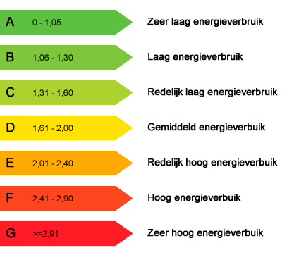

De gecertificeerde energielabels (RVO) kaart laat de huizen die een door de RVO (Rijksdienst voor Ondernemend Nederland) gecertificeerd energielabel hebben. De energielabels zijn gecategoriseerd van A (energiezuinig) tot en met G (energie-onzuinig). Niet alle huizen hebben een gecertificeerd energielabel omdat het alleen verplicht is bij de verkoop van een huis. De data komt rechtstreeks van RVO. De data is up-to-date tot 2014.
De gemodeleerde energielabel kaart laat per postcode zien wat het label is op basis van kenmerken van het huis zoals het gebouwtype, het bouwjaar en de gebouwde omgeving.
De energielabels geven inzicht in de energiezuinigheid van huizen. Op basis van deze gegevens kan in een eerste quickscan bepaald worden welke huizen in aanmerking komen voor energie besparende maatregelen. Bij energie-onzuinigere huizen hebben dit soort maatregelen doorgaans een hoger rendement.
